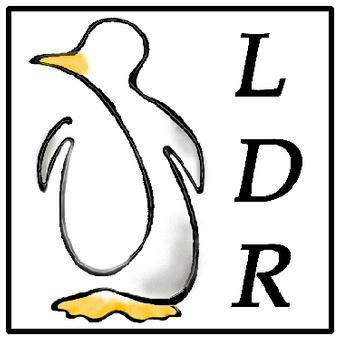

[successivo] [precedente] [inizio] [fine] [indice generale] [hall of fame] [indice analitico]
Questo è un libro di FAQ su GNU/Linux in italiano.
Esso vuole essere una raccolta di domande e risposte che potrebbero risultare utili a chi utilizza GNU/Linux.
Ho scelto il nome LDR Linux Domande e Risposte in quanto esso conferisce una connotazione italiana all'opera.
Quest'opera non si propone di fornire la soluzione completa a tutte le problematiche trattate. Si faccia quindi riferimento alla documentazione più specifica (altri libri, pagine di manuale, HOWTO, guide LDP, ecc.) per ottenere una spiegazione esauriente e dettagliata degli argomenti in questione. LDR è più che altro una guida di riferimento per tentare di risolvere rapidamente problematiche che richiederebbero un lungo approfondimento che a volte capita di non potere effettuare per mancanza di tempo. Sono presenti inoltre trucchi ed esperienze di tutti i giorni, elementi questi che difficilmente si riscontrano in documentazioni ufficiali. Le LDR sono rivolte sia agli utenti che cominciano ad utilizzare questo meraviglioso sistema operativo che a quelli più esperti.
Dalla versione 2.8 (Agosto 2000) le LDR non sono più un singolo documento e si scindono in due documenti indipendenti:
Nel primo dei due documenti saranno comprese FAQ riguardanti software libero; nel secondo saranno invece presenti le FAQ su software di altro genere.
Nel primo documento non sono state omesse le FAQ in cui si parla di altri sistemi operativi proprietari in relazione all'interazione tra questi e un sistema GNU/Linux. In pratica la descrizione delle metodiche utilizzate da chi utilizza un sistema GNU/Linux per accedere alle risorse presenti su dischi o reti la cui natura deriva da software proprietario è stata considerata argomento libero visto che i mezzi per farlo sono liberi.
Per software libero nel primo documento si intende software con licenza di distribuzione rispondente in qualche modo ai requisiti esposti nel manifesto GNU. Questo vale sia per il software che gira su sistemi operativi liberi che per software che gira su sistemi operativi non liberi. Molti software cambiano la propria licenza di distribuzione nel corso del tempo. Ecco perché a volte si riscontrano FAQ sullo stesso software sia nella sezione free che in quella nonfree; osservando bene, si rileveranno differenti numeri di versione del software stesso.
Il perché però sono tenuto a darlo, anzi lo voglio comunicare specialmente a chi, completamente digiuno del mondo che ruota attorno al software libero, preferirebbe disporre di un documento unico e non del frutto di una separazione fonte di ulteriore confusione.
Molti iniziano ad utilizzare sistemi GNU/Linux per moda. Altri perché hanno sentito che è gratuito. Altri ancora perché sono stanchi di sistemi operativi non conformi alle proprie esigenze. Non sono motivazioni errate, certo, ma l'insieme di programmi ed applicativi di un sistema GNU/Linux, è nato da motivazioni ideologiche e di natura differente.
É il caso di spiegare meglio il significato del termine «libero». In inglese si dice «free», ma free in inglese vuol dire anche gratuito.
Nel 1984 Richard Stallman lasciò il suo posto presso il laboratorio di intelligenza artificiale del MIT. Le motivazioni di questa decisione vanno ricercate nel disagio provato nei confronti di alcune tendenze che il mondo dell'informatica stava prendendo. Le restrizioni nell'utilizzo del software erano quello che più preoccupava Stallman. L'essere costretti, a causa di limitazioni di vario tipo, a non poter condividere con altri il software in tutti i suoi aspetti (il codice sorgente, l'utilizzo, la facoltà di distribuzione, ecc.), spinse Stallman a reagire. Egli decise allora di creare un sistema operativo dall'inizio. Decise che sarebbe stato compatibile con Unix per permettere agli utenti di Unix di potervi migrare una volta pronto. Lo chiamò GNU, acronimo ricorsivo che significa «GNU's Not Unix» (GNU Non è Unix). Nacque il progetto GNU.
Il software libero secondo il progetto GNU deve essere contraddistinto da queste caratteristiche:
l'utente deve avere libertà di eseguire il programma per qualsiasi scopo;
l'utente deve avere la possibilità di modificare il programma e deve essere quindi in possesso del sorgente del programma stesso per farlo;
l'utente deve avere la possibilità di distribuire il programma in maniera gratuita o dietro compenso;
l'utente deve avere la possibilità di distribuire liberamente versioni modificate del programma;
Il software GNU si integrò con altro software libero in circolazione (il kernel Linux ad esempio) e nacquero allora le prime distribuzioni GNU/Linux.
Con il passare del tempo però, un sempre più elevato numero di pacchetti di software proprietario si è affiancato al software libero sfruttandone la «moda». Molti software vengono oggi distribuiti con il codice sorgente aperto, ma spesso la licenza di distribuzione, in molti casi creata ad hoc, pone delle limitazioni alla modifica, alla distribuzione, alla distribuzione delle modifiche del software stesso. La parola Open Source al giorno d'oggi è abusata e male utilizzata. Il termine Open Source, facendo riferimento alla OSD (Open Source Definition), equivale al termine «software libero». Purtroppo però, sempre più spesso il software viene definito Open Source quando in realtà non lo è. Il documento «Why ``Free Software'' is better than ``Open Source''» di Richard Stallman è molto chiaro a questo riguardo ed è reperibile presso: <http://www.gnu.org/philosophy/free-software-for-freedom.html>. L'appendice C, elenca alcune delle particolarità che contraddistinguono il software che «sembra libero». Oltre a questo, si deve ricordare che esiste anche software che utilizza impropriamente licenze libere.
Utilizziamo software libero su un sistema sognato per essere tale!
Ecco allora perché ho diviso in due le LDR, separando le domande e risposte sul software libero da quelle sul software proprietario. Spero che questo non provochi disagio o maggiori incomprensioni; inoltre spero che la valenza didattica del gesto sia efficace.
Le domande e le risposte su GNU/Linux che troverete, sono tratte da gruppi e liste di discussione italiane ma ultimamente sono sempre più spesso il risultato del mio approfondimento su determinati argomenti.
|
Alla fine del documento è presente un'appendice in cui vengono raccolti i nomi dei collaboratori i suggerimenti dei quali sono stati utilizzati per la stesura di questo documento. I numeri presenti al fianco dei nomi si riferiscono alle Domande e Risposte cui hanno collaborato. |
L'elenco seguente si riferisce ad altra documentazione originale in italiano sul software libero, di una certa consistenza, pubblicata secondo la filosofia del software libero.
Daniele Giacomini, Appunti di informatica libera
Daniele Medri, Linux facile
Mi fa piacere ringraziare alcune persone che in qualche modo sono state importanti per la realizzazione di questo progetto:
Daniele Giacomini: autore di Appunti di informatica libera ha contribuito a miglioramenti stilistici e tipografici delle LDR. Daniele ha inserito il corpo principale delle LDR (2.4 e 2.8) nelle versioni 2000.04.12 e 2000.07.31 della sua opera. Le LDR sono inoltre scritte con Alml, un sistema di composizione SGML di sua creazione reperibile presso <http://master.swlibero.org/~daniele/software/alml/>;
Eugenia Franzoni: mi ha aiutato molto nell'impostazione iniziale di questo libro e nella sua diffusione;
Roberto Kaitsas: autore di <http://www.linuxlinks.it> mi fornisce impagabile aiuto nella realizzazione di questo progetto;
Alessandra Toti: industrial designer, è l'autrice dell'immagine di copertina delle LDR. Sfruttando le sue brillanti capacità artistiche ha saputo dare un tocco di vivacità a questo libro;
tutti quelli che effettuano le riproduzioni speculari (mirror) del sito dell'opera
Quello che segue è il logo delle LDR. Esso è stato realizzato da Alessandra Toti ed è allegato a tutti i formati disponibili; è inoltre presente sul sito di distribuzione principale: <http://www.linuxfaq.it>. Qualsiasi riproduzione cartacea dell'opera dovrebbe includere questa immagine come copertina.
|
 |
|
Figura i1.2. L'autore. |
Ecco le novità di questa edizione. Non sono state effettuate aggiunte al testo ma la revisione è stata intrapresa al fine di migliorare le componenti contenutistiche e stilistiche dell'opera. Ecco i dettagli di tale revisione:
utilizzo dell'impersonale nel testo delle FAQ;
rimozione numerose FAQ obsolete;
correzione FAQ errate;
adozione di uniformità stilistica dei contenuti;
adozione dell'uniformità dei nomi nel testo;
inserimento nuove immagini;
sono stati rimossi i titoli delle FAQ per cui esse risultano ora composte esclusivamente da domande e risposte.
Dovrebbe essere possibile fare riferimento a questa pagina anche con il nome prefazione.html
[successivo] [precedente] [inizio] [fine] [indice generale] [hall of fame] [indice analitico]